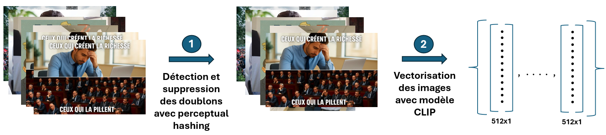
Détection de la diffusion inauthentique d’images sur les réseaux sociaux
Cas de l’expression ‘C’est Nicolas qui paie’ sur X

Djamal Y. TOE, Ousseynou SIMAL, Louise PECH-POULIQUEN
École Nationale de la Statistique et de l’Analyse de l’Information
2026-04-27
Introduction
Contexte socio-technique de la désinformation visuelle
Depuis les années 2000, l’essor des réseaux sociaux a transformé la circulation de l’information. Des plateformes comme X (anciennement Twitter) permettent une diffusion quasi instantanée auprès de millions d’utilisateurs (Ruffo et al. 2023).
- Facilitation de l’accès : Diffusion rapide et globale
- Risques : Propagation de contenus falsifiés ou manipulés
- Influence algorithmique : Mécanismes de recommandation favorisant la viralité
- Impact sociétal : Effets sur débats publics et processus électoraux
Cas d’étude : “C’est Nicolas qui paie” sur X
L’expression « C’est Nicolas qui paie » est apparue début 2025 sur X, incarnant un personnage fictif de contribuable français exaspéré par la fiscalité.
- Propagation rapide : Reprise par des comptes d’extrême droite
- Résonance politique : Débat à l’Assemblée nationale
- Questionnement : Diffusion organique ou coordonnée inauthentique ?
Cette étude vise à caractériser les mécanismes de diffusion des images associées à ce syntagme.
Objectifs de recherche
Objectif principal : Détecter la diffusion inauthentique d’images liées au syntagme “C’est Nicolas qui paie” sur X.
Objectifs secondaires :
• Analyser la coordination temporelle et visuelle des publications
• Identifier l’amplification artificielle via métriques d’engagement
• Détecter les opérations structurées au sein de communautés d’utilisateurs
Hypothèses de recherche
- H1 : La diffusion présente des schémas temporels non aléatoires révélant des comportements coordonnés.
- H2 : Certaines images visuellement similaires ont bénéficié d’une amplification artificielle.
- H3 : La propagation s’organise autour de communautés distinctes, avec des mécanismes propres à chaque groupe.
Méthodologie appliquée
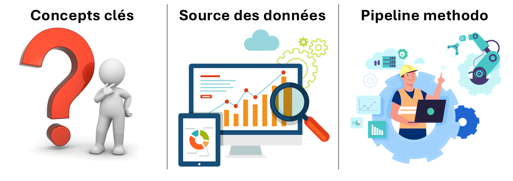
Définition des concepts opérationnels
- Diffusion d’une image : Actions assurant sa circulation, sa visibilité et sa réactivation dans l’espace informationnel.
- Coordination : Actions synchronisées par plusieurs acteurs, potentiellement sans intention trompeuse (Nizzoli et al. 2021).
- Amplification : Propagation rapide et engagée de contenus similaires (Wohlert et al. 2025).
- Opérations structurées : Campagnes coordonnées au sein de groupes (Wohlert et al. 2025).
- Inauthenticité : Comportements manipulateurs ou trompeurs.
Collecte et description des données
- Période : Janvier à novembre 2025
- Requête : Nicolas qui paie [nicolasquipaie OR #nicolasquipaie OR “nicolas qui paie” OR juliequipaie…]
- Volume : 217 580 tweets, 43 779 comptes uniques, 26 148 images (5 731 dupliquées)
- Variables : Utilisateur, image, timestamp, métriques d’engagement
Pipeline méthodologique intégré (1/3)
- Détection des doublons et vectorisation (CLIP)
Prétraitement des images Perceptual hashing \(\Rightarrow\) : Détection de doublons Modèle CLIP \(\Rightarrow\) : Vectorisation des images
Pipeline méthodologique intégré (2/3)
- Clustering visuel & sémantique (UMAP & HDBSCAN)
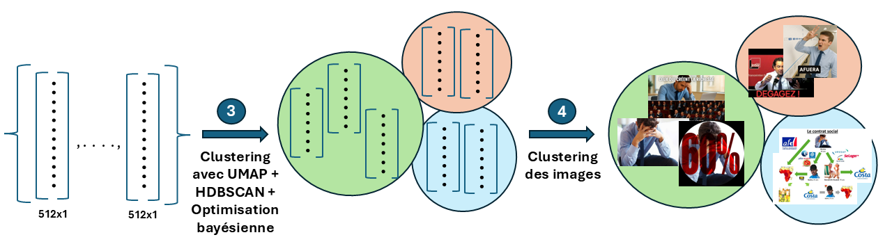
UMAP \(\Rightarrow\) Réduction de dimension HDBSCAN \(\Rightarrow\) Clustering des images Bayesian Opt \(\Rightarrow\) Tunning des paramètres
Pipeline méthodologique intégré (3/3)
- Réseaux & validation statistique
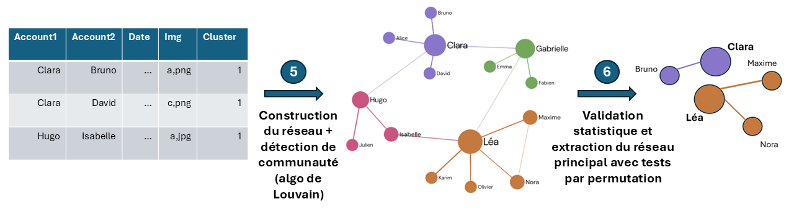
Poids : \(W_{uv}^{(c^*)} = \sum_{i \in I_{c^*}} e^{-\lambda \Delta t_{uv,i}}\) ; Graphe pondéré : \(G_{c^*} = (U_{c^*}, E_{c^*}, W^{(c^*)})\) Algo de Louvain Tests par permutation
Résultats
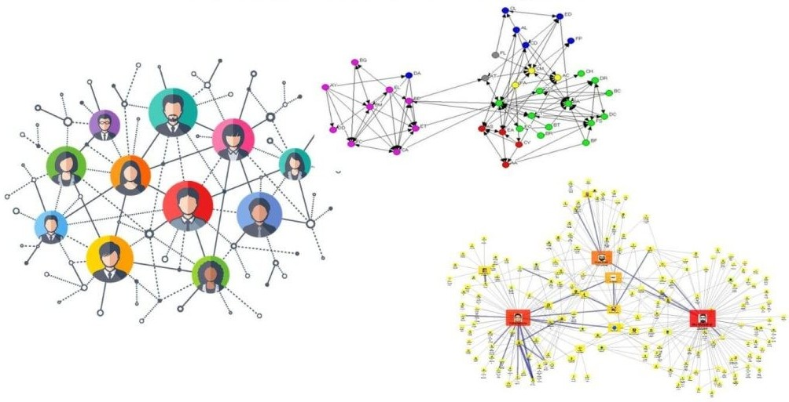
Structuration thématique des clusters d’images
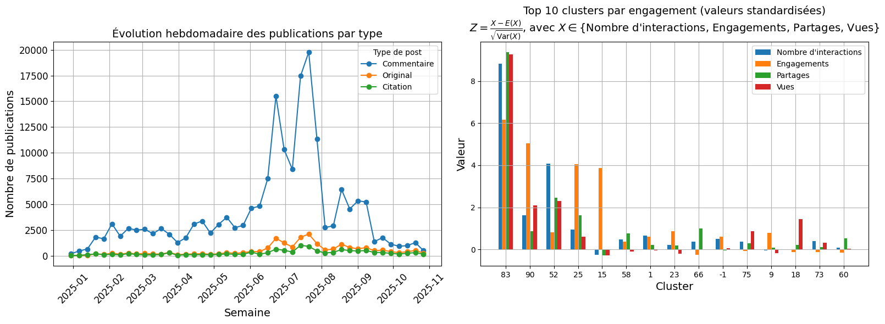
Pics d’activité mi-juin à mi-juillet Clustering CLIP + UMAP + HDBSCAN 105 clusters identifiés
Typologie thématique des clusters
| Thèmes | Description | Nombre de clusters |
|---|---|---|
| Narratifs politiques | Messages idéologiques, slogans | 15 dont les cluster 1 et 79 |
| Acteurs politiques | Personnalités, institutions | 13 |
| Memes et détournements | Humour, IA générative | 16 dont le cluster 62 |
| Captures d’écran | Tweets, articles | 21 |
| Symboles quotidiens | Objets, lieux culturels | 41 |
Illustration de clusters représentatifs
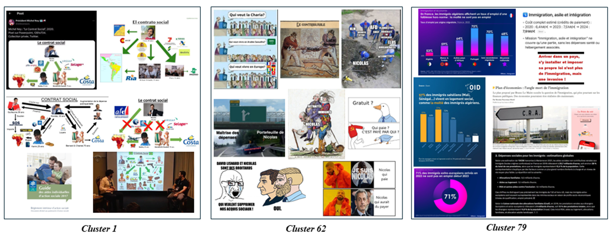
Cohérence visuelle et sémantique Thématisation (Nicolas, Memes, Immigration) Variabilité intra-cluster
Dynamiques d’interactions entre comptes

Proximité temporelle récurrente Amplificateurs actifs Phases d’intensification Diffusion coordonnée ?
Cluster 01 : Structure du réseau des comptes
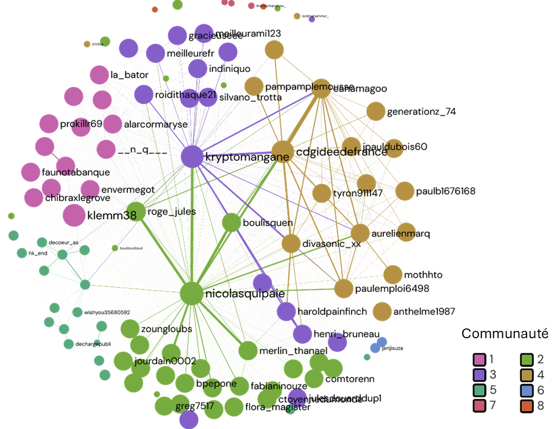
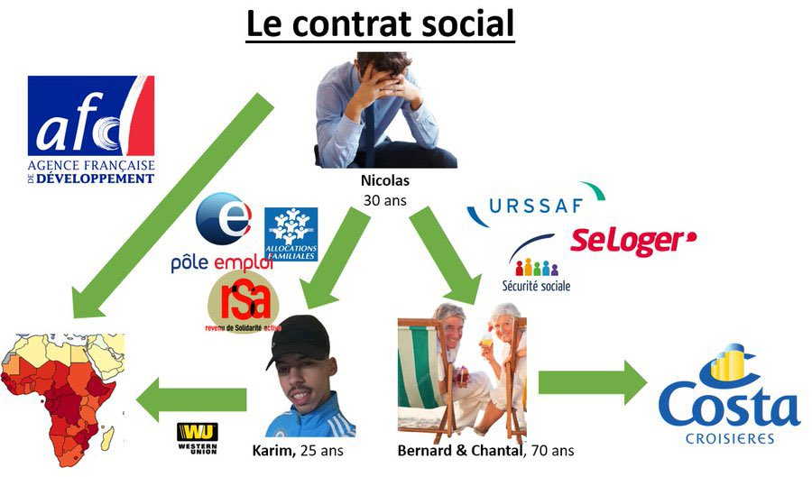
- Structure dense : 107 comptes reliés par 2789 liens
- Contrainte temporelle ↑ → communautés plus distinctes
- Communautés autour de nicolasquipaie, kryptomangane et cdgideedefrance
- Connexions fortes entre hubs
- Coordination inter-communautés probable
Modularité Q=0.17→0.42 Communautés distinctes Hub central nicolasquipaie Connexions inter-communautés
Cluster 01 : Robustesse de certains noyaux coordonnés
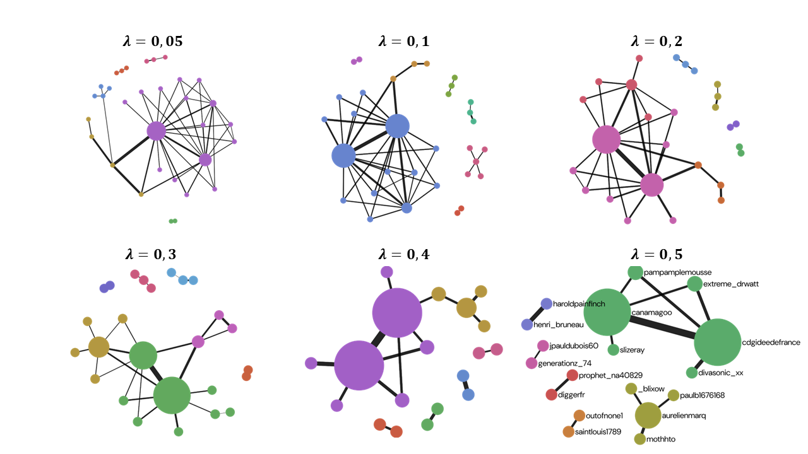
- Test de permutation appliqué pour chaque λ
- λ ↑ → moins de liens significatifs
- Seules les interactions très proches persistent
- Certains liens restent robustes quel que soit λ
- → Noyaux fortement synchronisés
- Diffusion en deux niveaux : initiation + amplification
Nicolasquipaie non significatif Production & Amplification \(\Rightarrow\) Diffusion deux niveaux Viralité : visibilité + coordination
Cluster 62 : Structure du réseau des comptes
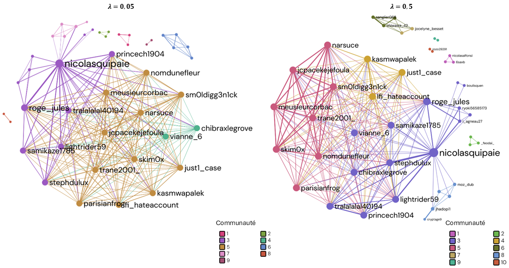
Modularité augmente avec \(\lambda\) Clustering élevé & assortativité positive \(\Rightarrow\) actions en communautés Diffusion organique
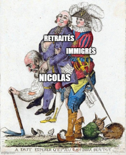
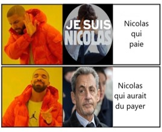
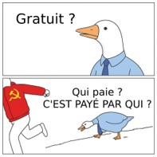
Cluster 62 : Détection de coordinations non significatives selon le paramètre de décroissance temporelle \(\lambda\)
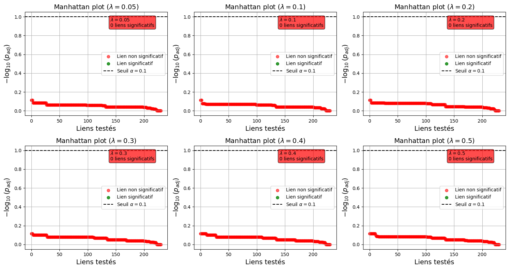
Test de permutation (B=2000) Manhattan plots (FDR ≤ 10%) Aucun lien statistiquement significatifs
Discussion
Validation des objectifs et hypothèses
Coordination temporelle détectée (Nizzoli et al. 2021)
Amplification artificielle cohérente avec Wohlert et al. (2025)
Communautés distinctes identifiées (Stella, Ferrara, and De Domenico 2018)
Hypothèses :
H1 : Partiellement validée (coordinations pas toutes significatives)
H2 : Validée (réutilisation massive, engagement élevé)
H3 : Validée (structures communautaires nettes)
Forces méthodologiques
Approche multimodale : hashing (Samanta and Jain 2021), CLIP (Radford et al. 2021), UMAP (McInnes, Healy, and Melville 2018), HDBSCAN (Malzer and Baum 2020)
Rigueur statistique : permutations + FDR (Shuken and McNerney 2021)
Réseau inféré : basé sur la similarité temporelle, différent des graphes sociaux explicites (Stella, Ferrara, and De Domenico 2018)
Limites et biais potentiels
Cas d’étude unique : dynamique propre au phénomène observé
Données partielles : hashtags et chaînes de réponses non exploités (Cinelli et al. 2022)
Biais possible : comptes inactifs ou supprimés, images non collectées
Interprétation prudente : coordination ≠ inauthenticité (Murero, 2023) (Murero 2023)
Conclusion
Synthèse des apports
L’analyse visuelle–sémantique–temporelle \(\Rightarrow\) schémas de diffusion non aléatoires
Réseaux \(\Rightarrow\) communautés structurées (initiateurs, relais, amplificateurs) & rôles différenciés dans la propagation.
Tests de permutation \(\Rightarrow\) plusieurs liens significatifs & faible densité du sous‑réseau coordonné (\(\Rightarrow\) interprétation prudente).
Contributions : pipeline reproductible pour l’analyse de diffusions visuelles coordonnées
Implications : appui à la modération et à la recherche sur la désinformation
Perspectives futures
- Extensions : collecte élargie, intégration texte + image
- Applications : détection temps réel, analyses inter‑plateformes
- Recherche : validation sur d’autres cas, mesure plus fine de l’inauthenticité
Remerciements
- Encadrants : Erwan LE NAGARD, Brandon SAINTILAN.
- Équipe pédagogique : École ENSAI.
- Outils : R, Python, Quarto.
Reférences bibliographiques
Cinelli, Matteo, Stefano Cresci, Walter Quattrociocchi, Maurizio Tesconi, and Paola Zola. 2022. “Coordinated Inauthentic Behavior and Information Spreading on Twitter.” Decision Support Systems 160: 113819. https://doi.org/https://doi.org/10.1016/j.dss.2022.113819.
Malzer, Claudia, and Marcus Baum. 2020. “A Hybrid Approach to Hierarchical Density-Based Cluster Selection.” In 2020 IEEE International Conference on Multisensor Fusion and Integration for Intelligent Systems (MFI), 223–28. IEEE. https://doi.org/10.1109/mfi49285.2020.9235263.
McInnes, Leland, John Healy, and James Melville. 2018. “UMAP: Uniform Manifold Approximation and Projection for Dimension Reduction.” arXiv Preprint arXiv:1802.03426. https://doi.org/10.48550/arXiv.1802.03426.
Murero, Monica. 2023. “Coordinated Inauthentic Behavior: An Innovative Manipulation Tactic to Amplify COVID-19 Anti-Vaccine Communication Outreach via Social Media.” Frontiers in Sociology Volume 8 - 2023. https://doi.org/10.3389/fsoc.2023.1141416.
Nizzoli, Leonardo, Serena Tardelli, Marco Avvenuti, Stefano Cresci, and Maurizio Tesconi. 2021. “Coordinated Behavior on Social Media in 2019 UK General Election.” Proceedings of the International AAAI Conference on Web and Social Media 15 (1): 443–54. https://doi.org/10.1609/icwsm.v15i1.18074.
Radford, Alec, Jong Wook Kim, Chris Hallacy, Aditya Ramesh, Gabriel Goh, Sandhini Agarwal, Girish Sastry, et al. 2021. “Learning Transferable Visual Models from Natural Language Supervision.” arXiv Preprint arXiv:2103.00020. https://doi.org/10.48550/arXiv.2103.00020.
Ruffo, Giancarlo, Alfonso Semeraro, Anastasia Giachanou, and Paolo Rosso. 2023. “Studying Fake News Spreading, Polarisation Dynamics, and Manipulation by Bots: A Tale of Networks and Language.” Computer Science Review 47: 100531. https://doi.org/https://doi.org/10.1016/j.cosrev.2022.100531.
Samanta, Priyanka, and Shweta Jain. 2021. “Analysis of Perceptual Hashing Algorithms in Image Manipulation Detection.” Procedia Computer Science 185: 203–12. https://doi.org/https://doi.org/10.1016/j.procs.2021.05.021.
Shuken, Steven R., and Margaret W. McNerney. 2021. “Visualizing the Costs and Benefits of Correcting p-Values for Multiple Hypothesis Testing in Omics Data.” bioRxiv. https://doi.org/10.1101/2021.09.09.459558.
Stella, Massimo, Emilio Ferrara, and Manlio De Domenico. 2018. “Bots Increase Exposure to Negative and Inflammatory Content in Online Social Systems.” Proceedings of the National Academy of Sciences 115 (49): 12435–40. https://doi.org/10.1073/pnas.1803470115.
Wohlert, Inga K., Davide Vega, Matteo Magnani, and Alexandra Segerberg. 2025. “Detecting Coordinated Behaviour on Video-First Platforms: The Challenge of Multimodality and Complex Similarity on TikTok.” arXiv Preprint, no. arXiv:2506.05868v2. https://arxiv.org/pdf/2506.05868v2.
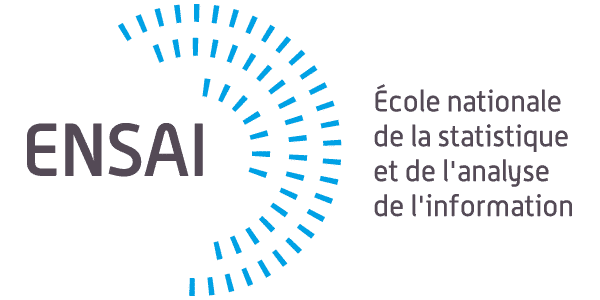